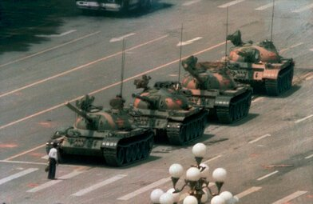

Tank Man
Jeff Widener · 5 June 1989 · Photograph
In copyright. Look and learn: shown for study, not for download.
Jeff Widener, thirty-two, was the Associated Press picture editor for Southeast Asia. Two nights earlier a stray rock had hit him in the face on Chang'an Avenue, and his Nikon F3 took the blow. On 5 June 1989 he was shooting from a hotel room overlooking Tiananmen Square when he ran out of film; a colleague found an Australian backpacker, John Flitcroft, in the lobby, and this frame is on Flitcroft's spare roll. The colleague then rode Flitcroft's rented bicycle to the AP office to deliver it. The man's name and fate are still unknown.